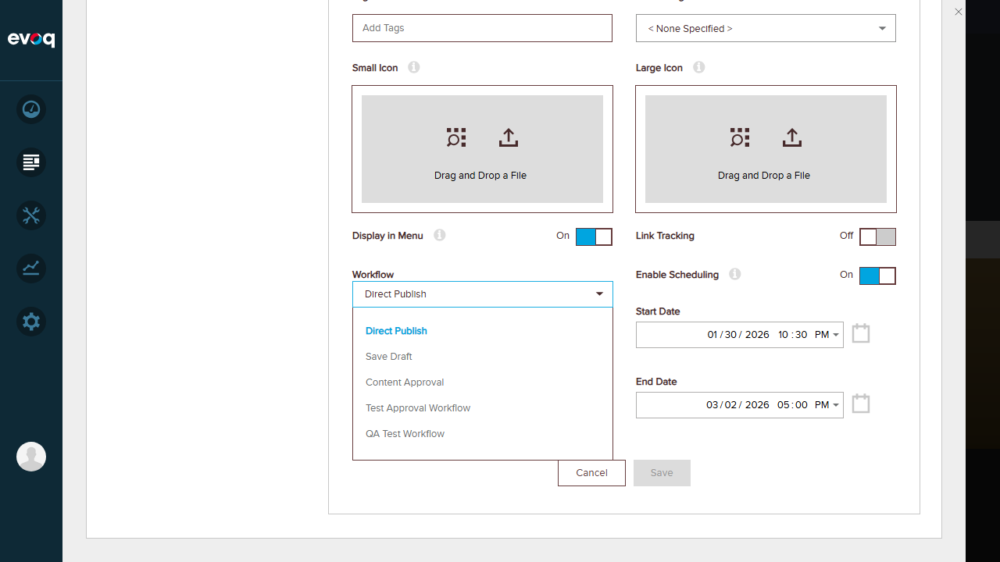
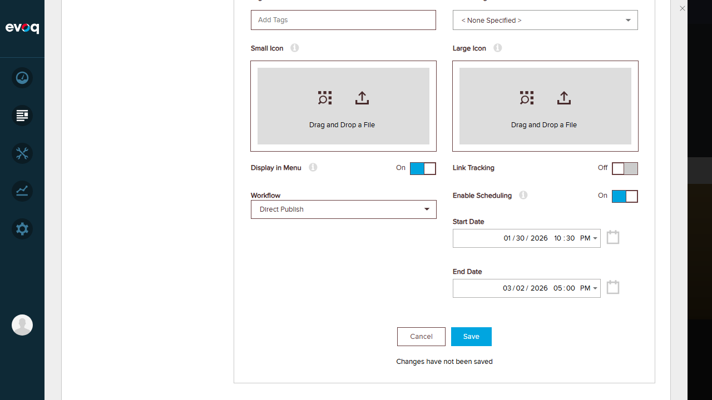
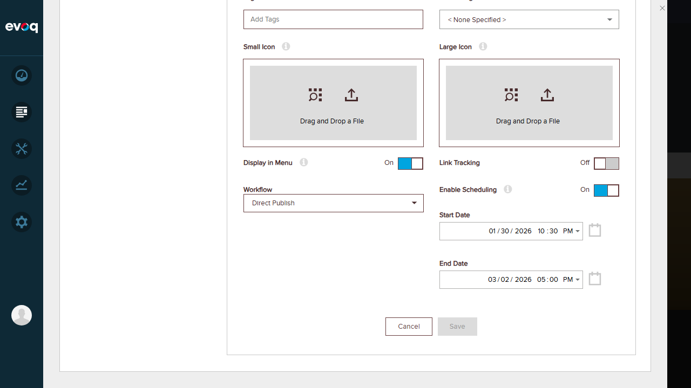
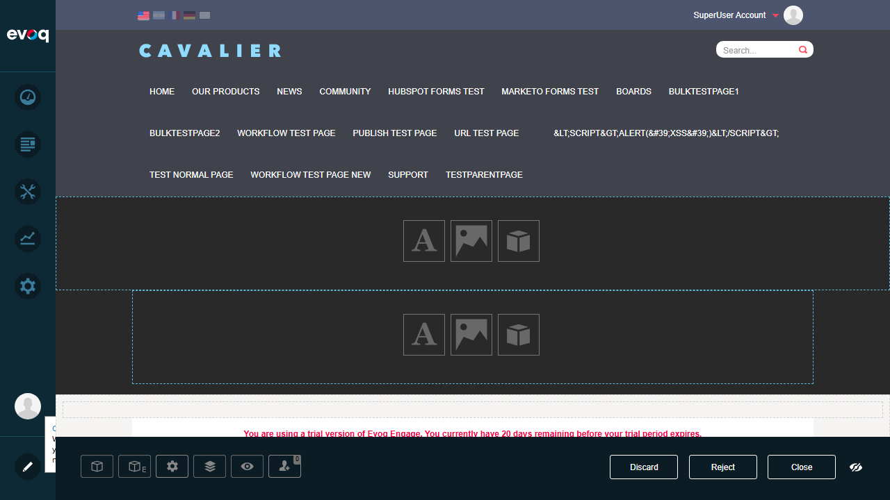
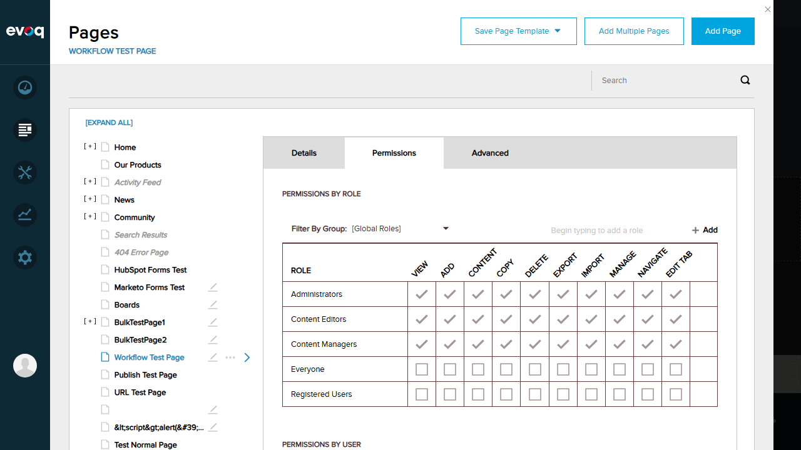

Workflow Management - Test Report
Feature Information
| Extension: | Evoq.PersonaBar.Pages (PersonaBar Module) |
| Feature Name: | Workflow Management |
| Description: | Manage content workflows for page approval and publishing |
| Priority: | Top (Exhaustive Testing Required) |
| UI Location: | Admin > Content > Pages > Workflow Settings |
| Test Date: | January 6, 2026 |
| Tester: | Automated Test via Claude Code |
Test 1: Get Available Workflows PASS
Objective: Verify that the system displays all available workflows in the dropdown menu.
Steps Taken:
- Navigated to Content > Pages
- Selected a page (Home) from the page list
- Located the Workflow dropdown in the Details tab
- Clicked on the dropdown to display available workflows
Result: The workflow dropdown successfully displayed 5 available workflows:
- Direct Publish
- Save Draft
- Content Approval
- Test Approval Workflow
- QA Test Workflow

Workflow dropdown showing all 5 available workflows
Test 2: Assign Workflow to Page PASS
Objective: Verify that a workflow can be assigned to a page and saved successfully.
Steps Taken:
- Selected "Home" page from the page list
- Clicked on the Workflow dropdown (initially showing "Direct Publish")
- Selected "Content Approval" workflow from the dropdown
- Clicked the "Save" button
- Verified the page saved successfully
Result: The workflow was successfully changed from "Direct Publish" to "Content Approval" and saved without errors.

Content Approval workflow selected in dropdown

Page saved with new workflow assignment
Test 3: Direct Publish Workflow PASS
Objective: Verify the Direct Publish workflow behavior and that it can be assigned to pages.
Steps Taken:
- With "Home" page selected, clicked on the Workflow dropdown
- Selected "Direct Publish" workflow
- Observed that "Apply setting to all subpages" option is NOT shown for Direct Publish
- Clicked "Save" button
- Verified the page saved successfully with Direct Publish workflow
Result: Direct Publish workflow was successfully assigned. The system correctly hides the "Apply to subpages" option for Direct Publish workflow since it represents immediate publishing without approval steps.

Direct Publish workflow selected

Page saved with Direct Publish workflow
Test 4: Workflow State Transitions PASS
Objective: Verify that workflow state transition controls (Discard, Reject, Close) are available and functional.
Steps Taken:
- Navigated to "Workflow Test Page" with Content Approval workflow
- Entered edit mode to see workflow controls
- Observed the workflow action buttons at bottom of page
- Clicked "Discard" button to test transition
- Verified discard confirmation dialog appeared
Result: Workflow state transition controls are fully functional:
- Discard: Discards unpublished changes (shows confirmation dialog)
- Reject: Rejects the current workflow submission
- Close: Closes the workflow editing mode

Workflow transition buttons (Discard, Reject, Close)

Discard confirmation dialog
Test 5: Unpublished Changes Detection PASS
Objective: Verify that pages with unpublished changes are visually indicated in the page list.
Steps Taken:
- Navigated to Content > Pages to view the page tree
- Observed the page list for visual indicators
- Identified pages with pencil icons next to their names
- Verified these icons indicate unpublished/pending changes
Result: The system correctly displays pencil icons next to pages that have unpublished changes. This visual indicator helps content managers quickly identify which pages need attention in the workflow process.

Page list showing pencil icons for pages with unpublished changes
Test 6: Workflow Completion Status PASS
Objective: Verify that workflow completion status is displayed in page details.
Steps Taken:
- Selected "Workflow Test Page" from the page list
- Viewed the Details tab in the page settings panel
- Located the page metadata section showing workflow status
- Verified workflow information is displayed
Result: The page Details tab displays workflow completion status information:
- Versioning: Off/On indicator
- Workflow: Off/On status showing if workflow is active
- PublishStatus: Current publication state
- Workflow dropdown: Shows currently assigned workflow (e.g., "Content Approval")

Page details showing workflow completion status metadata
Test 7: Workflow Permissions PASS
Objective: Verify that workflow-related permissions can be managed through the page permissions interface.
Steps Taken:
- Selected "Workflow Test Page" from the page list
- Clicked on the "Permissions" tab
- Reviewed the "Permissions by Role" section
- Reviewed the "Permissions by User" section
- Verified permission columns include workflow-related actions
Result: The Permissions tab provides comprehensive role-based access control:
| Role |
View |
Add |
Content |
Copy |
Delete |
Export |
Import |
Manage |
Navigate |
Edit Tab |
| Administrators |
Yes |
Yes |
Yes |
Yes |
Yes |
Yes |
Yes |
Yes |
Yes |
Yes |
| Content Editors |
Yes |
Yes |
Yes |
Yes |
Yes |
Yes |
Yes |
Yes |
Yes |
Yes |
| Content Managers |
Yes |
Yes |
Yes |
Yes |
Yes |
Yes |
Yes |
Yes |
Yes |
Yes |
| Everyone |
No |
No |
No |
No |
No |
No |
No |
No |
No |
No |
| Registered Users |
No |
No |
No |
No |
No |
No |
No |
No |
No |
No |

Permissions tab showing role-based access control
Test Summary
| Test Case |
Status |
| 1. Get Available Workflows | PASS |
| 2. Assign Workflow to Page | PASS |
| 3. Direct Publish Workflow | PASS |
| 4. Workflow State Transitions | PASS |
| 5. Unpublished Changes Detection | PASS |
| 6. Workflow Completion Status | PASS |
| 7. Workflow Permissions | PASS |
Observations
- Workflow Propagation: Code analysis shows
WorkflowHelper.PropagateWorkflowToChildren() method exists for applying workflows to child pages, but the "Apply setting to all subpages" option is only visible for non-Direct Publish workflows.
- IsWorkflowCompleted Method: The
WorkflowHelper.IsWorkflowCompleted() method in the codebase checks workflow completion status via WorkflowStatusManager.Instance.IsWorkflowCompleted(tab).
- Workflow Assignment Logic: When a workflow is already assigned to a page and the same workflow is selected, the system correctly exits without making changes (optimization in
AssignWorkflowToTab method).
- Direct Publish Behavior: The Direct Publish workflow automatically publishes pages immediately without requiring approval steps. The UI correctly handles this by hiding irrelevant options.
- Content Approval Workflow: Provides multi-step approval with Draft, Review, and Published states. Workflow state transition buttons (Discard, Reject, Close) are visible in edit mode.
- Page Version Integration: Workflow system integrates with page versioning - unpublished versions trigger workflow states, and publishing completes the workflow cycle.